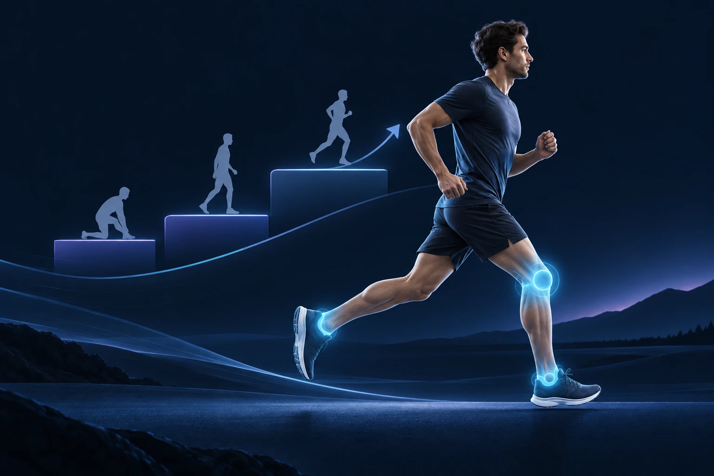

Comment reprendre le sport sans réveiller une douleur au genou ou à la cheville ?
Publié le

Après plusieurs semaines d’arrêt, reprendre au niveau où vous vous étiez arrêté est tentant. Vos articulations et vos tendons ont pourtant besoin de retrouver progressivement leur capacité à supporter l’effort. Une reprise réussie se construit avec des séances adaptées, des temps de récupération et quelques repères simples pour reconnaître une douleur qui mérite un avis médical.
Pourquoi la reprise demande-t-elle une progression ?
Vous retrouvez parfois rapidement le plaisir de courir, mais votre aisance ne mesure pas à elle seule la préparation de vos jambes. Les muscles, les tendons et les articulations doivent se réhabituer aux contraintes répétées. Le changement de rythme compte autant que le sport choisi : une longue randonnée improvisée peut représenter une reprise aussi exigeante qu’un entraînement en salle.
Imaginez un variateur de lumière. Pour reprendre, mieux vaut augmenter l’intensité par étapes que passer immédiatement du minimum au maximum. Cette image s’applique à la durée, à la vitesse, au relief et à la fréquence des séances. Les augmenter ensemble rend difficile l’identification de ce que votre corps tolère.
Un ancien problème mérite également sa place dans le programme. Une cheville qui se dérobe ou un genou régulièrement gonflé ne doivent pas être considérés comme de simples souvenirs de blessure. Ils peuvent justifier un bilan avant de reprendre les sauts, les changements de direction ou les terrains irréguliers.
Comment organiser les premières séances ?
Commencez par une activité que vous pouvez ajuster facilement. La marche sur terrain régulier, le vélo avec une résistance modérée ou l’alternance de marche et de course permettent de moduler l’effort. Un échauffement progressif prépare la séance ; il ne compense toutefois pas un programme trop ambitieux.
Pour la course, les programmes destinés aux débutants associent souvent de courtes périodes courues, des périodes marchées et des jours de récupération. L’intérêt réside dans la progressivité, pas dans l’obligation de terminer un programme à une date précise. Après une blessure, les consignes de votre soignant passent avant un calendrier générique. Repères de reprise de la course, Berkshire Healthcare NHS.
Choisissez un objectif observable : terminer votre boucle sans boiter, conserver une marche confortable le lendemain ou retrouver progressivement une activité régulière. La distance affichée par la montre peut attendre. Si une séance a été bien tolérée, répétez-la avant de la rendre plus difficile.
Dans l’Hérault, passer d’une promenade plate à un parcours avec des descentes, des escaliers ou un sol caillouteux change nettement la sollicitation. Pour vos premières sorties autour de Sète ou de Montpellier, prévoyez un itinéraire avec une possibilité de retour facile. Vous pourrez augmenter ensuite la difficulté sans subir la longueur du chemin restant.
Quelle place donner au renforcement et à la récupération ?
Reprendre un sport ne consiste pas seulement à répéter son geste principal. Le travail musculaire et l’équilibre participent aussi à la préparation. Selon votre situation, un kinésithérapeute peut proposer des exercices pour la cuisse, la hanche, le mollet ou le contrôle de la cheville.
Après une entorse, retrouver une marche indolore ne suffit pas toujours pour retrouver les capacités nécessaires au sport. La rééducation évalue notamment la mobilité, la force, l’équilibre et les gestes propres à votre pratique. La reprise se décide à partir de cet ensemble. HAS, recommandation sur l’entorse de cheville.
Gardez des journées plus légères entre les séances exigeantes. Elles peuvent comporter une activité différente, si celle-ci reste confortable. Le sommeil, l’alimentation habituelle et l’organisation du travail comptent également dans votre disponibilité pour l’entraînement. Un programme réaliste est celui que vous pouvez suivre sans accumuler fatigue et douleurs.
Comment réagir si une douleur apparaît ?
Une gêne diffuse après un effort inhabituel n’a pas la même signification qu’une douleur très localisée, un gonflement ou une sensation de dérobement. Observez le moment d’apparition, le mouvement déclencheur et l’évolution après la séance. Évitez de prendre un médicament uniquement pour terminer un entraînement douloureux.
Si la douleur augmente, modifie votre façon de marcher ou persiste malgré une réduction de l’activité, demandez un avis. Une douleur osseuse précise, répétée à chaque sortie, peut nécessiter de rechercher une lésion de fatigue. Une radiographie initiale normale ne suffit pas toujours à l’écarter. AAOS, lésions osseuses de fatigue.
Après un traumatisme, une impossibilité d’appui, un blocage du genou ou une déformation justifient une évaluation rapide. Une articulation rouge et chaude associée à de la fièvre impose un avis urgent. Ces situations dépassent le cadre d’une simple adaptation du programme sportif.
Faut-il une IRM ou une opération ?
Une consultation commence par vos symptômes et l’examen. Le médecin cherche à comprendre ce qui fait mal avant de choisir les examens utiles. Selon les constatations, une radiographie peut être plus pertinente qu’une IRM d’emblée. L’imagerie répond à une question clinique ; elle ne remplace pas l’examen. Assurance Maladie, consultation pour une douleur du genou.
La chirurgie n’est pas une étape habituelle de la reprise sportive. Elle se discute lorsqu’une lésion identifiée et son retentissement le justifient. Dans de nombreuses situations, la première réponse repose sur une adaptation de l’effort et une rééducation ciblée.
Quels repères emporter en consultation ?
Notez votre sport, votre fréquence antérieure et la durée de l’arrêt. Précisez ce que vous pouvez encore faire, ce qui déclenche la douleur et ce que vous aimeriez retrouver. Apportez les comptes rendus et les images des examens déjà réalisés. Ces informations aident à construire un objectif concret, qu’il s’agisse de reprendre le tennis ou de marcher confortablement le week-end.
Pour approfondir le rôle de la stabilité, consultez les informations du Dr François Lozach sur le pied et la cheville. Si une douleur limite votre reprise, vous pouvez prendre rendez-vous avec le Dr François Lozach à Sète.
Ces conseils sont d’ordre général et ne remplacent pas un avis médical personnalisé.